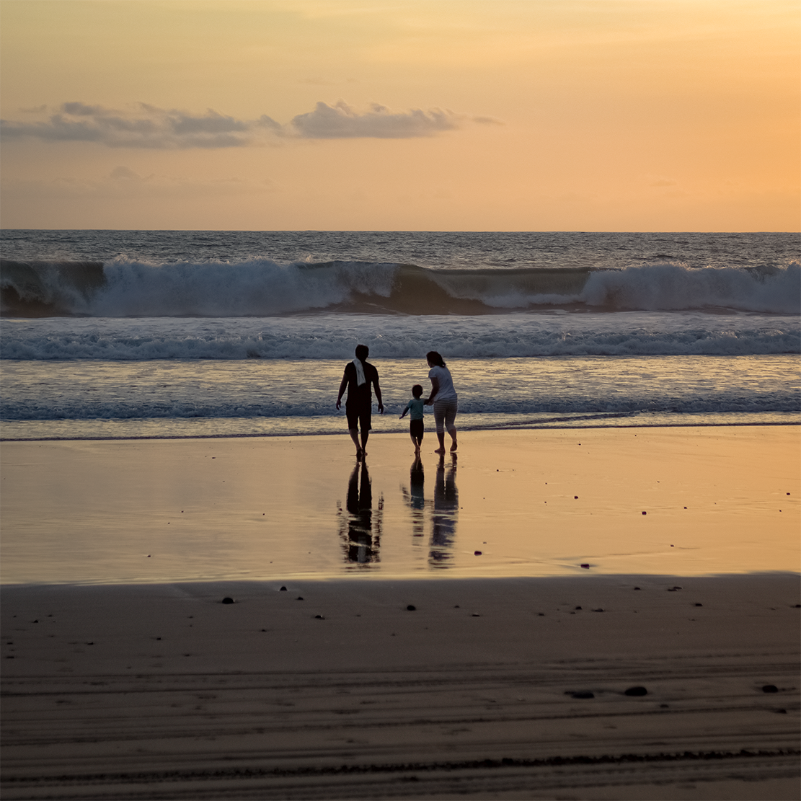
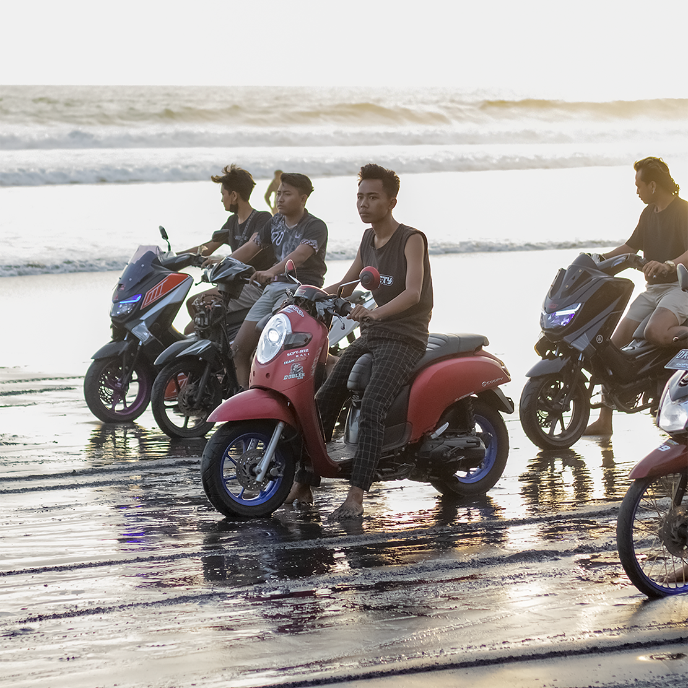
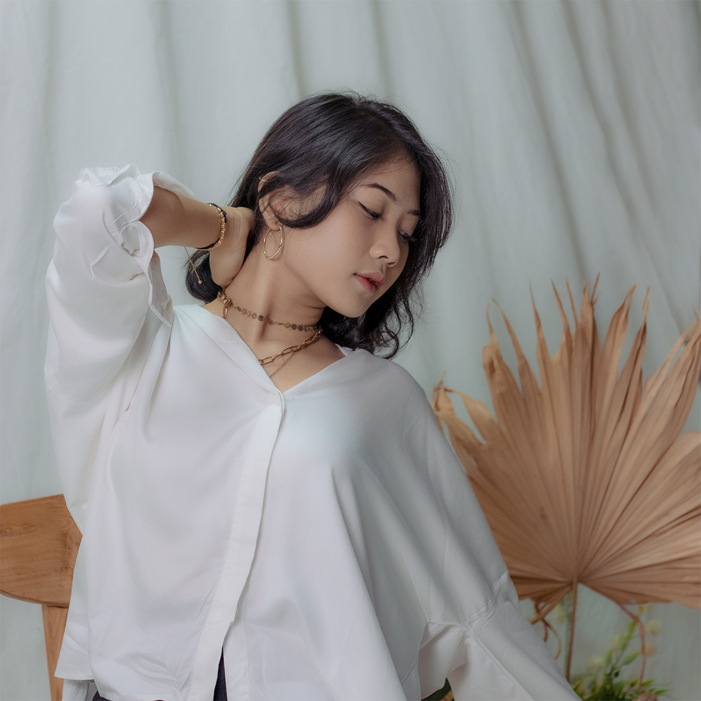

Koleksi Gambar
| No | Gambar | Keterangan |
|---|---|---|
| 1 |  | Sebuah potret keluarga cemara yang yang berekreasi di salah satu tempat di Tabanan yaitu Pantai Pasut. |
| 2 |  | Masih ditempat yang sama yaitu Pantai Pasut. Kumpulan anak muda melakukan balap liar di pesisir pantai. |
| 3 |  | Salah satu potret model yang diambil waktu pelaksaan kegiatan pelatihan anggota baru UKM HIMATOGRAFI STIKOM Bali. |